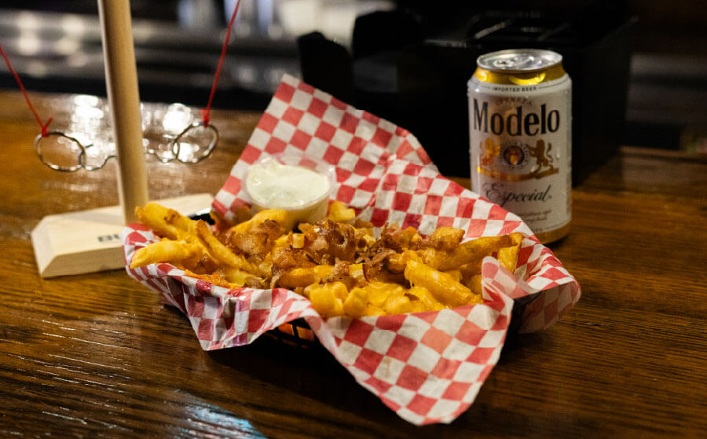
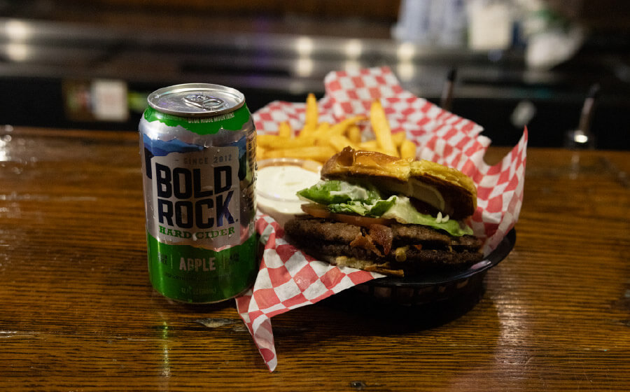
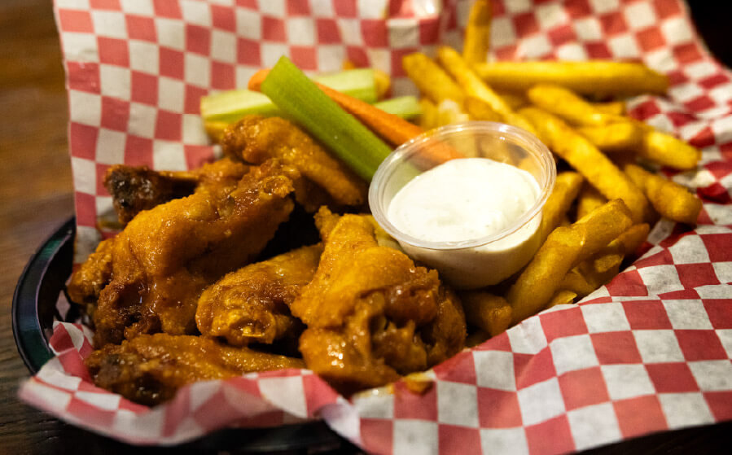

 Bacon Cheese Fries Crispy golden fries piled high with melted cheese and smoky bacon, finished with a warm, salty crunch that hits perfect with a late-night drink.
 Classic Cheese Burger Juicy, griddled beef with melty cheese on a toasted bun—simple, loud, and done right. Served with fries.
 Mango Habanero Wings Sweet mango up front, habanero heat on the finish—sticky, glossy, and addictive. Served with fries, ranch, carrots, and celery.